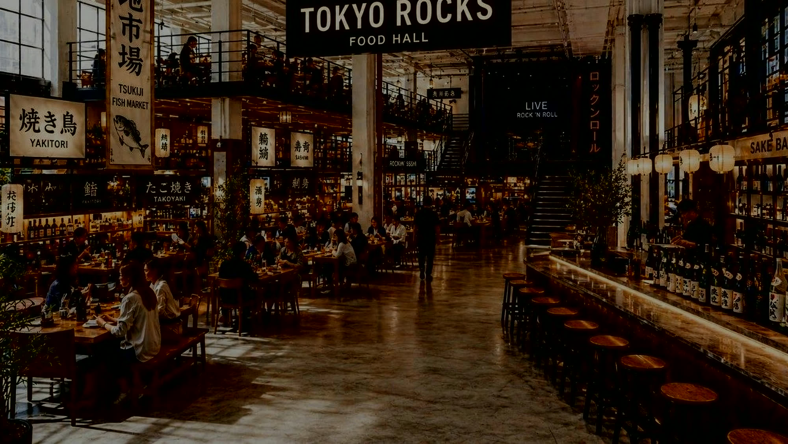

New York
Flagship
Japanese soul. Rock-and-roll energy.
A scalable hospitality platform.
$18MProposed raise
30%NEWCO ownership
SoHoNew York City
Todd English · CEO & Founder
Investment Opportunity · Confidential